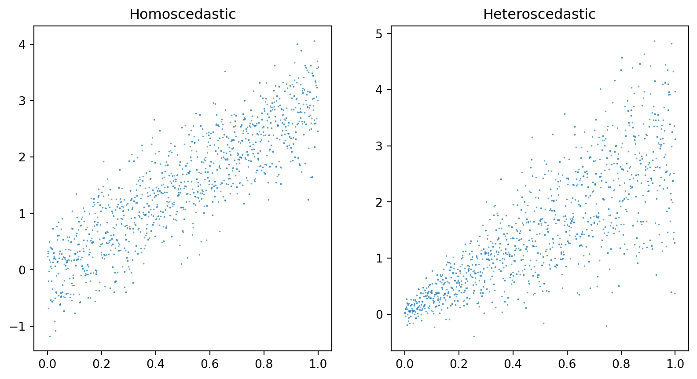
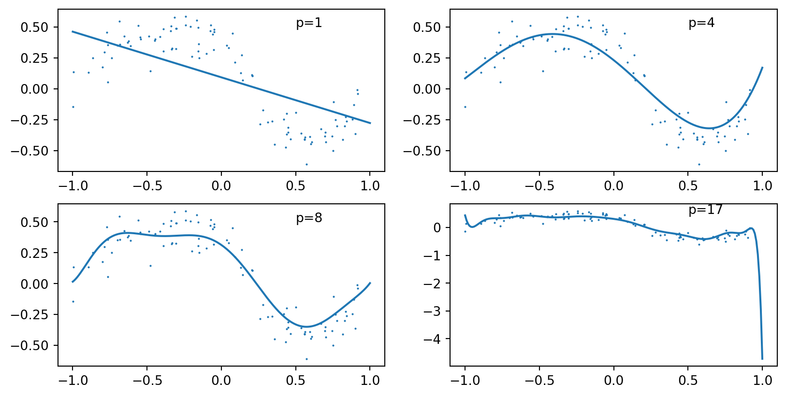
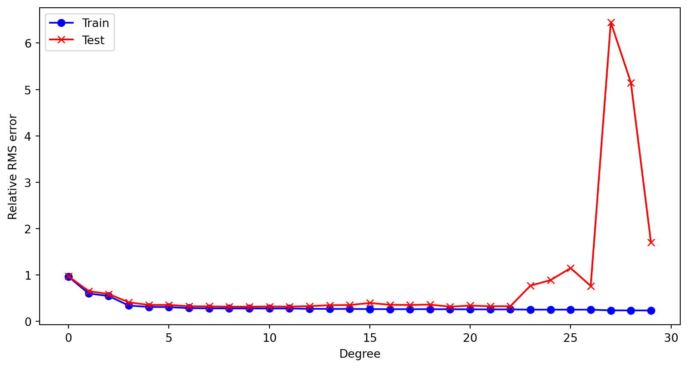
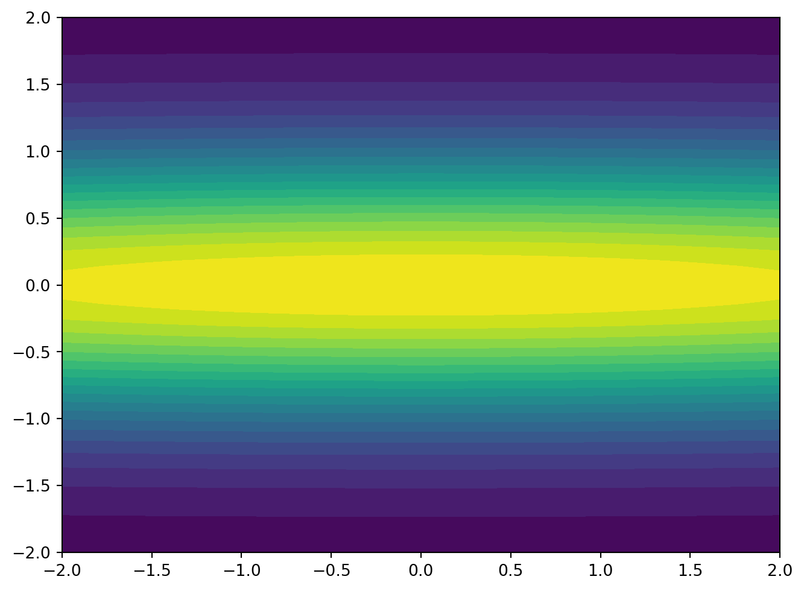
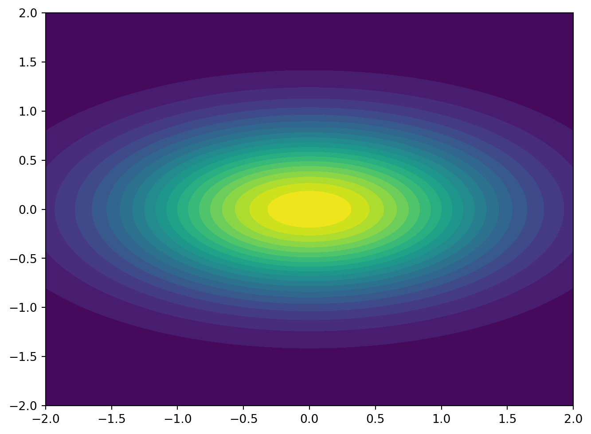

DATA 609 Meetup 3
George I. Hagstrom
Case Study: Extending Linear Regression
What are the validity conditions for linear regression?
- Linear Relationship
- Independent Residuals
- Normal Residuals
- ?????
Case Study: Extending Linear Regression
What are the validity conditions for linear regression?
- Linear Relationship
- Independent Residuals
- Normal Residuals
- Homoscedasticity i.e. constant variance
Case Study: Homoscedasticity
Unequal Variance Common
- Typical for Variance to be proportional to magnitude in some way
- Could try a data transformation, but isn’t satisfying
- Heterogeneous detectors
- Have sensor network with mix of types
Maximum Likelihood
- Consider following statistical model for \(y_i\) in terms of measurements \(\mathbf{x}_i\): \[ y_i \sim \mathrm{Normal}\left(\mathbf{x}_i^T\mathbf{\theta},\sigma_i\right) \]
- \(\sigma_i^2\) is variance of measurement of \(y_i\)
- Likelihood: \[ \log p(\mathbf{y}|X,\theta) = \log\left(\Pi_{i=1}^n \frac{1}{2\pi\sigma_i}\exp\left(-\frac{\left(y_i-\mathbf{x}_i^T\mathbf{\theta}\right)^2}{2\sigma_i^2} \right) \right) \]
Maximum Likelihood
- Consider following statistical model for \(y_i\) in terms of measurements \(\mathbf{x}_i\): \[ y_i \sim \mathrm{Normal}\left(\mathbf{x}_i^T\mathbf{\theta},\sigma_i\right) \]
- \(\sigma_i^2\) is variance of measurement of \(y_i\)
- Likelihood: \[ \log p(\mathbf{y}|X,\theta) = -\frac{n}{2} \log(2\pi) - \sum_{i=1}^n\log(\sigma_i) - \left\|\mathrm{diag}\left(1/\sigma_i\right)\left( X \mathbf{\theta} - \mathbf{y}\right)\right\|^2 \]
Weighted Least Squares
- Maximum Likelihood Estimate for the Unequal Variance Problem is a Weighted Least Squares optimization:
\[ \min_{\mathbf{\theta}} \|W^{1/2}(X\mathbf{\theta} - \mathbf{y})\|^2 \]
- Here the matrix \(W\) is a diagonal matrix with \(\frac{1}{\sigma_i^2}\) on the diagonal entries
- Large \(\sigma_i\) means error of that term is less important \[ X^TWX \mathbf{\theta} = X^TW\mathbf{y} \]
Gauss-Markov Theorem
- Can extend this result to scenario when measurement errors have a given covariance matrix \(\Gamma\)
- Then \(W=\Gamma^{-1}\) and Weighted Least Squares provides maximum likelihood estimate
- Best Linear Uniased Estimator
When is WLS useful?
- Sample more of one group than another
- Errors vary based on detector or value
- Care about some predictions on some data more than others
Weekly Summary
- Reading: Chapter 13 of VMLS
- HW 2 Available, due in 2 weeks
- Problem 1 and 2 based on this week
- Problem 3 next week
- Will release another
numpycoding video, lmk if you prefer a different language
Data Fitting
- Have some observations \(y_i\) and \(\mathbf{x}_i\) and want to fit a regression
- \(m\) observations, have \(n\) basis functions \(f\) \[ y_i \sim \mathrm{Normal}\left(\sum_{j=1}^{n} \theta_j f_j(\mathbf{x}_i),\sigma\right) \]
- Normal errors gives justification for least squares
Data Fitting Solution
Can form matrix \(A\): \[ A = \begin{bmatrix} f_1(\mathbf{x}_1) & f_2(\mathbf{x}_1) & \cdots & f_n(\mathbf{x}_1) \\ \vdots & \vdots & \vdots & \vdots \\ f_1(\mathbf{x}_m) & f_2(\mathbf{x}_m) & \cdots & f_n(\mathbf{x}_m) \end{bmatrix} \]
- And find: \[ \min_{\theta} \|A\mathbf{\theta} - \mathbf{y}\|^2 \]
Example: Autoregressive Time Series
- Suppose we have observations \(y_t\) and want to predict new \(y\) based on previous observations \[ y_t = \theta_1 y_{t-1} + \theta_2 y_{t-2}+\cdots+\theta_n y_{t-n} \]
- How to write this in our framework?
Example: Autoregressive Time Series
- Suppose we have observations \(y_t\) and want to predict new \(y\) based on previous observations \[ y_t = \theta_1 y_{t-1} + \theta_2 y_{t-2}+\cdots+\theta_n y_{t-n} \]
- How to write this in our framework?
- Define \(\mathbf{x}_i = \begin{bmatrix} y_{t-1} & y_{t-2} & \cdots & y_{t-n} \end{bmatrix}\)
Example: Central Park Temperature
- Hourly Central Park Temperature from Jan-March 2023
How to Predict
- Baseline Mean and Variance:
- \({T}_{\mathrm{mean}} = 42.5\), \(\sigma_T = 8.57\)
- Guess Temperature from 24 hours before
- \(\sigma_{lag} = 1.41\)
- How about using the past 8 hours?: \[ T_t = \sum_{i=1}^8 \theta_i T_{t-i} \]
Setting up the model
- Slight Improvement \(\sigma = 1.25\)
Predictions
Text(0, 0.5, 'Temperature')More Time Series
- Can incorporate trends: \[ T_t = \theta_0(i-i_0) + \sum_{i=1}^8 \theta_i T_{t-i} \]
- Other variables or functions \[ T_t = \theta_{m}\mathrm{Month}(i) + \sum_{i=1}^8 \theta_i T_{t-i} \]
Generalization and Validation
- Goal usually isn’t to find model with absolute lowest RMS error
- Instead want a model that predicts well on new data
- Two goals often in conflict
Example: Polynomial Interpolation
- Fitting high degree polynomials famously leads to overfitting \[ y_i = \sum_{j=1}^n \theta_j x^{j-1} \]
Fit Results
- Curve develops unnecessary features at higher order

Generalization Error
- At high order, generalization fails

Regularization
Another way to handle overfitting is with regularization
Add term proportional to \(\|\mathbf{\theta}\|^2\) \[ \min_{\mathbf{\theta}} \|A\mathbf{\theta}-\mathbf{y}\|^2 + \lambda\|\mathbf{\theta}\|^2 \]
Use if \(A\) is ill-conditioned or many parameters.
Ridge Regression
- Name comes from geometry
- Consider objective function with a “ridge”

Ridge Regression
- Name comes from geometry
- Regularizer turns ridge to peak

Bayesian Linear Regression
\[ \mathbf{y} \sim \mathrm{Normal}\left(X\theta,\sigma^2 I\right) \\ \mathbf{\theta} \sim \mathrm{Normal}\left(0, \frac{1}{\lambda} I\right) \]
- \(\frac{1}{\lambda}\) is variance of prior distribution on \(\theta\)
- \(p(\theta|X)\) is normal
- \(E(\theta|X)\) is least squares ridge regression solution
Ridge Regression Solution
- Equivalent to: \[ \left(A^TA + \lambda I\right)\mathbf{\theta} = A^T\mathbf{y} \]
Feature Engineering
- Can use domain knowledge to create custom features in your data
- New feature vectors: \(f_1(\mathbf{x})\), \(f_2(\mathbf{x}), \cdots\)
- Standard data transforms,
log, z-score - Thresholding: \(f(x) = \max(0,x)\)
- Domain Knowledge: \[ \mathrm{BMI} =\frac{\left(\mathrm{Weight}\right)}{\left(\mathrm{Height}\right)^2}\]
Thanks!

DATA 609